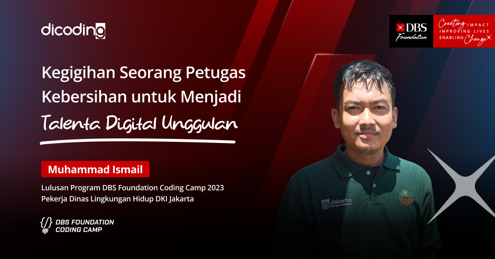

DBS Foundation Coding Camp adalah sebuah program pelatihan coding secara online untuk meningkatkan kompetensi masyarakat Indonesia dalam bidang teknologi informasi. Program ini adalah bagian dari DBS Foundation, yayasan yang berfokus untuk meningkatkan taraf kehidupan melalui kewirausahaan sosial dan mempersiapkan masyarakat untuk masa depan. Melalui DBS Foundation Coding Camp, DBS Foundation berharap dapat membekali masyarakat dengan kemampuan untuk masa depan yang lebih baik, khususnya kematangan literasi keuangan dan digital.
Setelah sukses memberikan lebih dari 52,000 beasiswa coding kepada talenta digital Indonesia pada tahun 2023, pada tahun 2024 ini, DBS Foundation Coding Camp akan kembali memberikan puluhan ribu beasiswa pelatihan coding dari level Dasar (Basic), Pemula (Beginner), Menengah (Intermediate), hingga Mahir (Expert).
Siapapun Bisa Mendaftar!
Terbuka Untuk Seluruh Warga Negara Indonesia
Khususnya
52.000+ peserta
di antaranya
54% Pelajar
41% Umum
5% Pengajar
Pendaftaran dapat memilih salah satu dari dua alur belajar yang tersedia, yaitu Front-End Web Developer dan Machine Learning Developer. Kedua bidang ini dipilih karena Front-End Web Developer dan Machine Learning Developer termasuk ke dalam top 10 emerging jobs yang dibutuhkan oleh industri di Indonesia berdasarkan LinkedIn 2020 Emerging Jobs Report Indonesia .
Setelah mendaftar, peserta akan secara otomatis mendapat akses belajar coding tanpa biaya pada level basic dan beginner serta harus mengerjakan kelas tersebut sesuai dengan timeline yang telah ditentukan secara mandiri (self-paced). Setelah itu, tim penyelenggara Program DBS Foundation Coding Camp 2024 akan menyeleksi peserta yang berhak dan layak untuk mendapatkan beasiswa pada level lanjutan (intermediate, kemudian expert) dengan jumlah terbatas.
Berikut adalah pilihan alur belajar Program DBS Foundation Coding Camp 2024.
Kurikulum disusun oleh Dicoding dan pelaku industri dalam bidang Web Development. Siswa dipersiapkan untuk menjadi Front-End Web Developer sesuai standar kebutuhan industri.
Kurikulum lengkap yang disusun oleh Dicoding bersama IBM dan Google beserta pelaku industri. Siswa dipersiapkan untuk menjadi Machine Learning Developer sesuai standar kebutuhan industri.
Dasar (Basic) &
Pemula (Beginner)
Menengah
(Intermediate)
Mahir
(Expert)